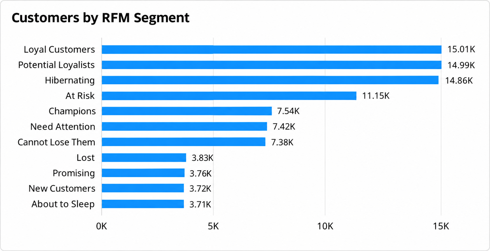
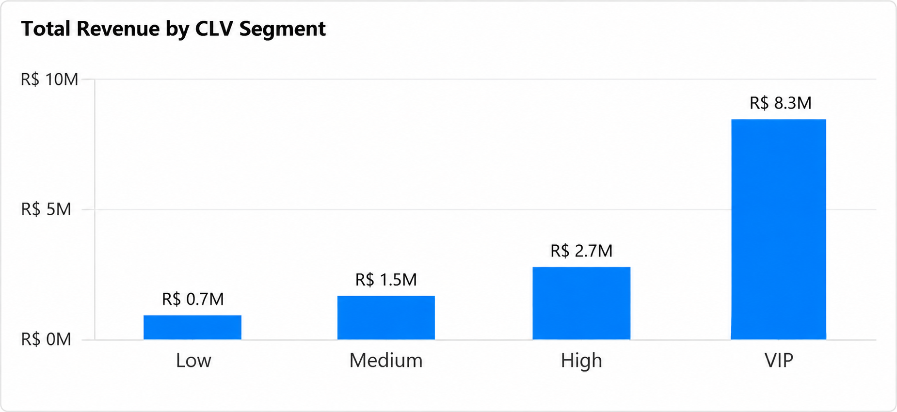
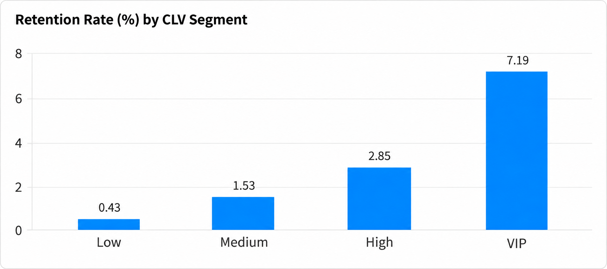
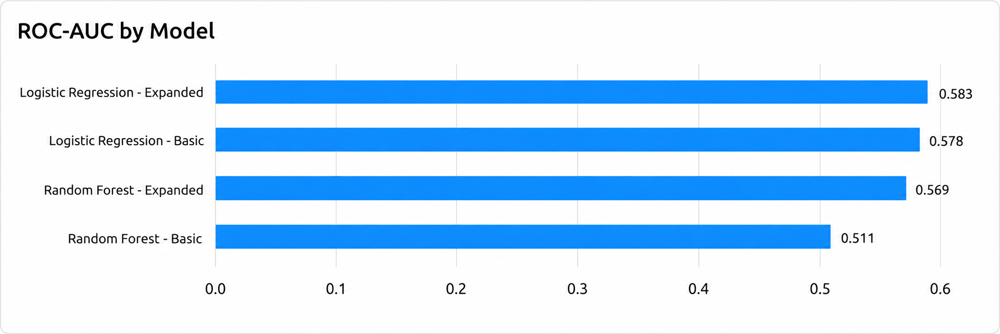
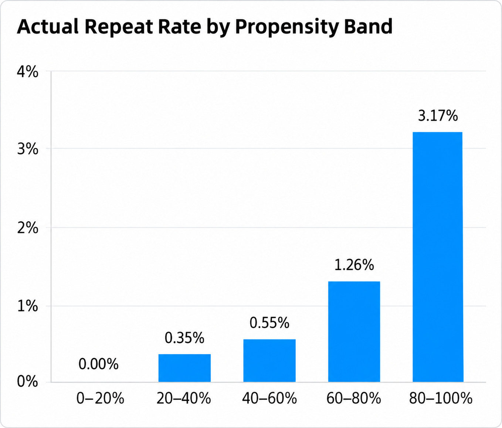
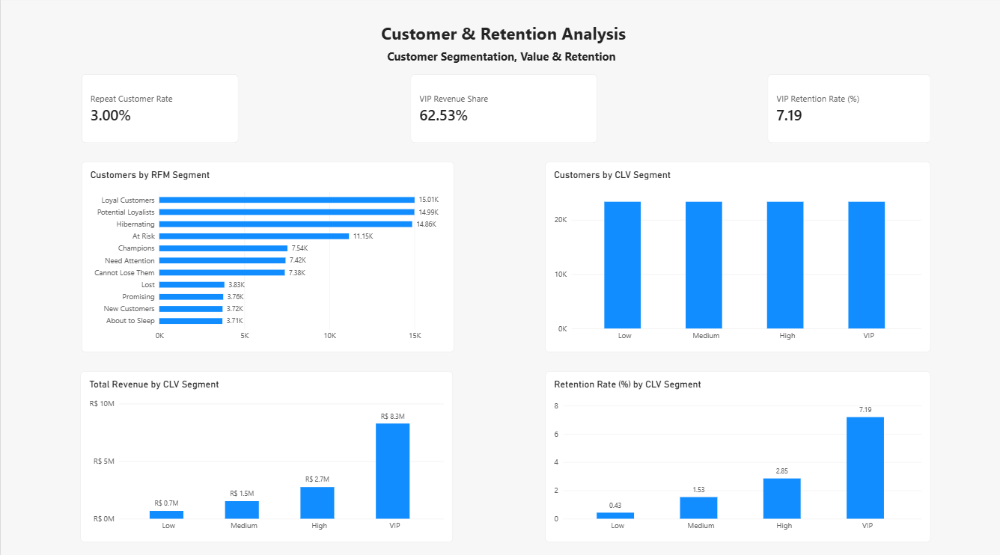
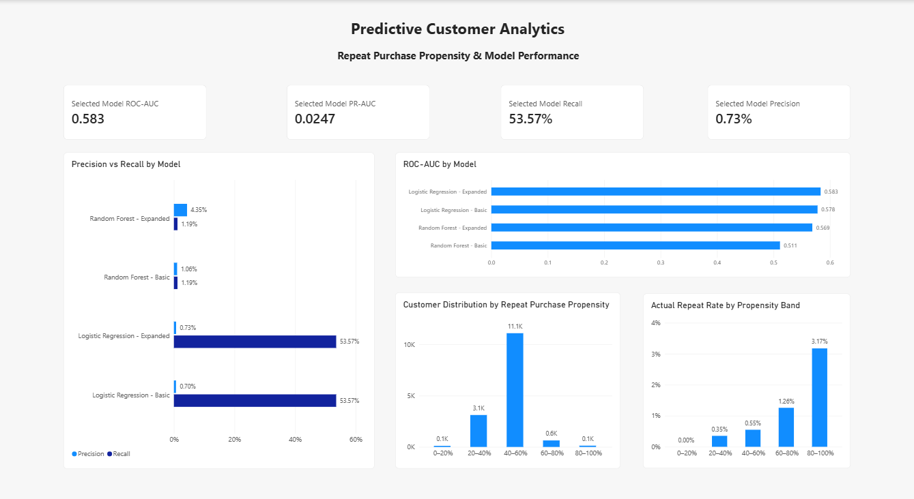

What drives revenue and purchasing activity?
Examine revenue trends, order volume, average order value, product-category performance, and geographic concentration to understand where business activity is strongest.
CASE STUDY / CUSTOMER ANALYTICS
An end-to-end analysis of Brazilian e-commerce customer behavior, combining exploratory analysis, customer segmentation, lifetime value, retention analysis, predictive modeling, and business intelligence.
01 / PROJECT OVERVIEW
E-commerce businesses generate large volumes of transactional data, but individual orders alone provide only a limited view of customer behavior.
This project analyzes the Olist Brazilian E-Commerce Dataset to understand how customers purchase, how value is distributed across the customer base, which customers return, and whether future repeat purchasing behavior can be identified from historical activity.
The analysis combines exploratory data analysis, RFM customer segmentation, historical customer lifetime value, retention analysis, predictive modeling, and an interactive Power BI dashboard to translate customer-level data into actionable business insights.
02 / BUSINESS QUESTIONS
The project was structured around a set of practical customer and business questions designed to move from descriptive analysis to segmentation, retention, and predictive insight.
Examine revenue trends, order volume, average order value, product-category performance, and geographic concentration to understand where business activity is strongest.
Measure customer-level revenue contribution and identify whether a relatively small portion of the customer base accounts for a disproportionate share of total revenue.
Use recency, frequency, and monetary behavior to group customers into interpretable RFM segments that support differentiated engagement strategies.
Evaluate repeat purchasing and cohort behavior to understand how often customers return and how retention differs across customer-value groups.
Test whether historical customer behavior can be used to rank customers by repeat-purchase propensity and support more targeted retention activity.
03 / DATA & ANALYTICAL WORKFLOW
The project followed a structured end-to-end analytics workflow, beginning with raw Olist marketplace data and progressing through customer analysis, segmentation, retention, predictive modeling, and business intelligence.
The analysis used multiple relational tables covering customers, orders, order items, payments, reviews, products, and sellers. These sources were combined to create a consistent customer-level analytical view.
Reviewed table structures, relationships, missing values, identifiers, order statuses, and customer-level behavior before defining the analytical scope.
Filtered the analysis to delivered orders, joined relevant tables, validated customer identifiers, and prepared clean transaction-level and customer-level datasets.
Analyzed revenue, order volume, average order value, product-category performance, geographic concentration, and overall purchasing behavior.
Built recency, frequency, and monetary metrics to group customers into interpretable behavioral segments such as Champions, Loyal Customers, At Risk, and Lost.
Measured realized customer revenue and grouped customers into Low, Medium, High, and VIP value segments to evaluate customer-value concentration.
Examined repeat purchasing and cohort behavior to understand how retention differed across customer-value groups.
Built a leakage-safe time-based repeat-purchase modeling framework using logistic regression and random forest models, with emphasis on customer ranking rather than hard classification.
Consolidated the analytical outputs into an interactive three-page dashboard covering executive KPIs, customer and retention analysis, and predictive analytics.
04 / KEY FINDINGS
The analysis showed that revenue and customer value were highly concentrated, while repeat purchasing remained relatively rare across the broader customer base.
Revenue depended heavily on a relatively small group of product categories and geographic markets, highlighting areas where merchandising and regional strategy could have the greatest impact.
Customer value was strongly concentrated, making high-value customer identification especially important for retention, engagement, and prioritization strategies.
Repeat purchasing was uncommon across the customer base, but VIP customers were far more likely to return, reinforcing the value of targeted retention efforts for high-value segments.
05 / CUSTOMER SEGMENTATION & VALUE
Customer segmentation revealed meaningful differences in purchasing behavior and economic contribution across the customer base.
Customers were segmented using Recency, Frequency, and Monetary behavior into groups such as Champions, Loyal Customers, Potential Loyalists, At Risk, and Lost.
The resulting segments provide a practical framework for tailoring engagement, retention, and reactivation strategies based on customer behavior rather than treating all customers the same.


Customers were grouped into Low, Medium, High, and VIP value segments using realized historical revenue.
Although the four groups contained roughly similar numbers of customers, their revenue contribution differed dramatically, with VIP customers generating the majority of total revenue.
06 / RETENTION ANALYSIS
Retention was low across the customer base, but the likelihood of repeat purchasing increased sharply as customer value rose.

Customers in the Low-value segment had a retention rate of only 0.43%, while VIP customers reached 7.19%.
This means VIP customers were more than sixteen times as likely to make another purchase as Low-value customers, making them a particularly important group for retention and relationship-building strategies.
Because repeat purchasing is uncommon overall, retention efforts should be prioritized where they are most likely to protect meaningful customer value — especially among high-value and VIP customers.
07 / PREDICTIVE MODELING
A leakage-safe, time-based modeling framework was developed to test whether historical customer behavior could help prioritize customers by their likelihood of making a future repeat purchase.
Logistic Regression and Random Forest models were evaluated using both basic and expanded feature sets. Because repeat purchasing was extremely rare, model evaluation considered ROC-AUC, PR-AUC, precision, recall, and F1 rather than relying on accuracy.
The Expanded Logistic Regression model was selected because it achieved the strongest overall ranking performance while identifying 53.57% of actual repeat purchasers.


Customers were grouped into propensity bands using the model's repeat-purchase scores. The observed repeat rate increased consistently as model scores increased.
Customers in the highest propensity band had an observed repeat rate of 3.17%, compared with effectively 0% in the lowest band. This monotonic pattern supports the model's usefulness for ranking customers even though absolute classification performance remained limited.
The model's low precision reflects the rarity of repeat purchasing in the dataset. Its scores should therefore not be interpreted as confident predictions of exactly who will purchase again. Instead, the model is most useful for ranking customers and helping prioritize limited retention resources toward groups with relatively stronger repeat-purchase signals.
08 / POWER BI DASHBOARD
The analytical outputs were consolidated into a three-page Power BI dashboard designed to make the project's key findings accessible, interpretable, and useful for business decision-making.
The executive dashboard summarizes the core commercial metrics and purchasing patterns across delivered orders, giving decision-makers a concise view of overall marketplace performance.
It brings together revenue, order volume, average order value, customer reach, monthly trends, product-category performance, and geographic concentration in a single reporting view.


The customer dashboard brings together behavioral segmentation, customer value, and retention performance to show how different customer groups contribute to the business.
It highlights RFM segments, CLV groups, revenue concentration, repeat customer behavior, and retention rates, making it easier to identify the customers most important to long-term value.
The predictive analytics dashboard summarizes the performance of the repeat-purchase models and shows how customer propensity scores translate into observed repeat-purchase behavior.
It brings together model evaluation metrics, ROC-AUC comparisons, precision and recall, customer propensity distributions, and actual repeat rates across propensity bands to support practical customer prioritization.

09 / PROJECT TAKEAWAY
This project demonstrates an end-to-end customer analytics workflow, transforming raw e-commerce transaction data into insights about revenue, customer value, segmentation, retention, and future purchasing behavior.
By combining exploratory analysis, RFM segmentation, historical customer lifetime value, retention analysis, predictive modeling, and Power BI reporting, the project shows how customer data can be translated into practical insights for prioritization and decision-making.